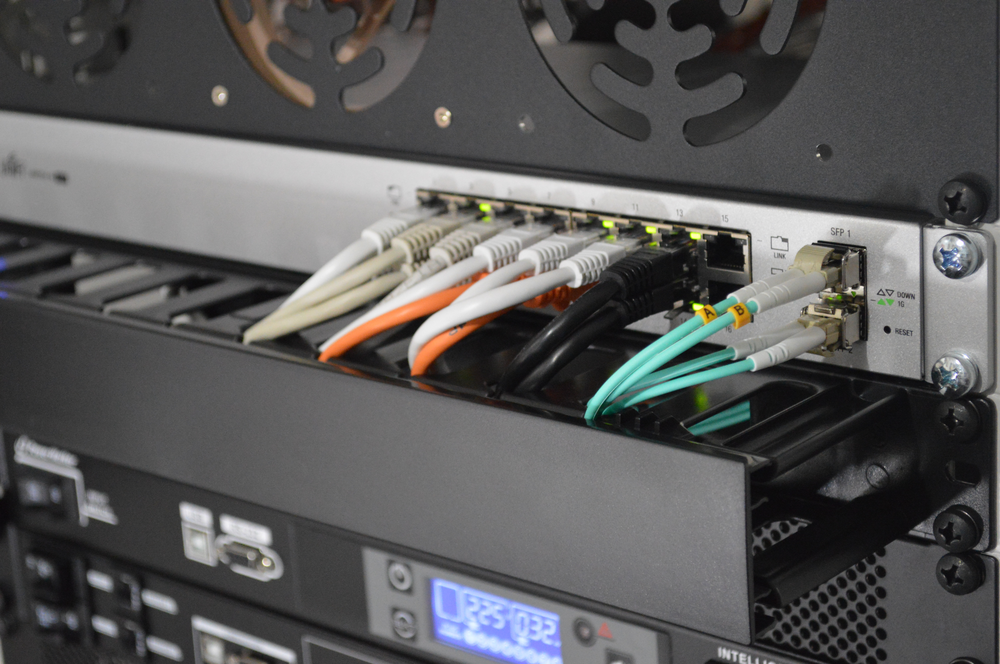
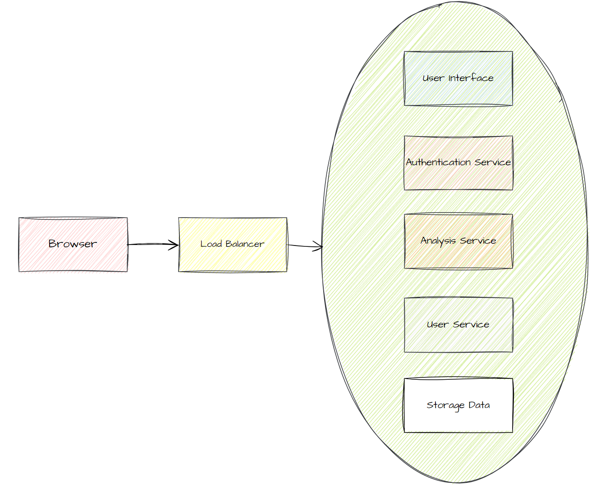
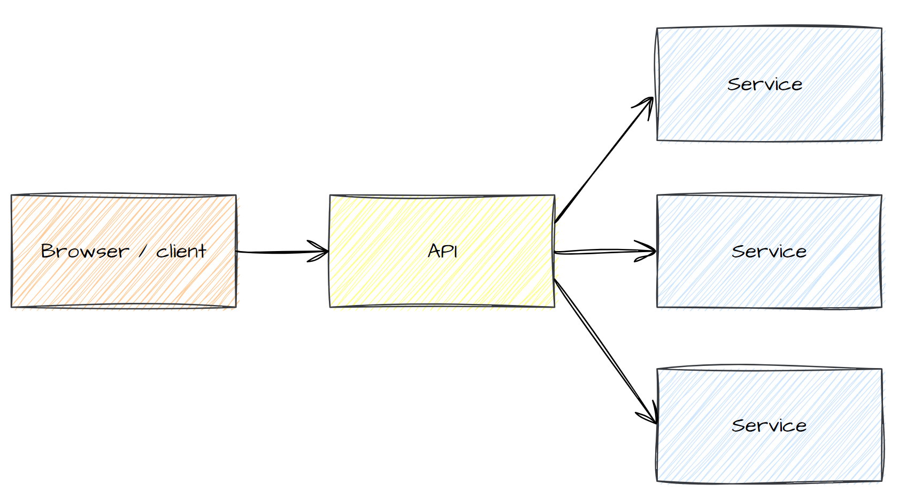
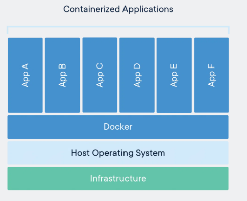
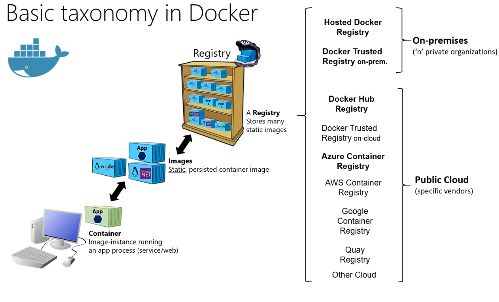
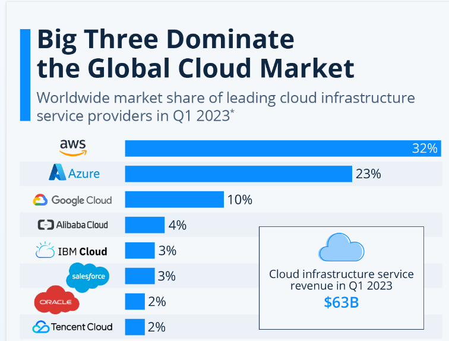

Business Intelligence
Cloud Plattformen (1)
Was ist cloud computing?
"Cloud computing is a model for enabling ubiquitous, convenient, on-demand network access to a shared pool of configurable computing resources (e.g., networks, servers, storage, applications, and services) that can be rapidly provisioned and released with minimal management effort or service provider interaction. This cloud model is composed of five essential characteristics, three service models, and four deployment models."
Charakteristik - on-demand and self-service
- Interaktion mit Admin oder irgendeiner Person fällt weg keine personelle Abhängigkeiten
- Eigenständiges bereitstellen einer computing-ressource zu jeder Tageszeit
- Ermöglicht flexible, spontane und agile Entwicklungsprozesse
Charakteristik - broad network access
- Sehr flexible Zugangsmöglichkeit um auf die computing-Ressourcen zuzugreifen
- Alle Funktionalitäten über den Browser oder Apps erreichbar
- Die Art und Konfiguration des clients Rechners spielt eine untergeordnete Rolle (Smartphone, tablet, iOS, Linux, ...)

Charakteristik - resource pooling
- Die potentiellen Ressourcen eines Nutzers werden mehreren Nutzern zur Verfügung gestellt und sind nicht statisch reserviert
- Multi-tenant - mehrere Kunden nutzen die gleiche computing Hardware ohne voneinander zu wissen oder sich gegenseitig zu beeinträchtigen
- Die Ressourcen werden verbrauchsabhängig verteilt
- Nur begränzten Einfluss auf geo-location der Ressourcen meist nur über Region (North-europe) seltener über Land(Staat) oder Rechenzentrum
Charakteristik - rapid elasticity
- Beim hoch- oder runterskalieren der Ressourcen gibt es keine negativen Konsequenzen für den Nutzer
- Theoretisch unbegrenzte Ressourcen - aber auch unbegrenzte Kosten
- Die Ressourcen werden verbrauchsabhängig verteilt
Charakteristik - measured service
- Monitoring der Verbräuche und Auslastung, ermöglicht Analyse wieviele Ressourcen benötigt werden um bestimmte tasks zu erfüllen
- Kosten können verringert werden
- Transparenz und Planungssicherheit
Service Models - SASS - Software as a Service
- Anwendungen können in der cloud Infrastruktur genutzt werden
- Hierbei kommt wieder die Charakteristik "broad network access" zu tragen Zugriff von vielen verschiedenen client-Plattformen
- Der Nutzer hat keine Kontrolle über die Konfiguration der unterliegenden Komponenten wie z.B. das Betriebssystem, Speichertechnologie, Netzwerk oder Rechenkapazität
- Azure SQL
Service Models - IASS - Infrastructure as a Service
- Dem Nutzer wird eine Basis-Infrastruktur zur Verfügung gestellt - Speicher, Rechenkapazität und Netzwerke
- Es kann eigenständig ein Betriebssystem und weitere Software installiert werden
- Erweiterte Konfigurationsmöglichkeiten über z.B. Netzwerkkomponenten können bereitgestellt werden (Firewall, Ports etc.)
- VM und Container
Service Models - PASS - Platform as a Service
- Ordnet sich zwischen SASS und IASS an
- Nutzer bekommen eine Application vom Anbieter deployed in der cloud Infrastruktur
- Diese Applikation kann komplett vom Nutzer konfiguriert werden
- Zusätzlich können auch Konfigurationen für das Betriebssystem und den Speicher vorgenommen werden
- App Engines
Service Models - Weitere models
- Database as a Service
- Function as a Service
- Bare Metal as a Service
Deployment models
- Private cloud - Für eine Organization wird exklusiv Infrastruktur bereitgestellt
- Community cloud - Mehrere Organisationen mit gleichen Interessen teilen sich die cloud-Infrastruktur
- Public Cloud - Die cloud Infrastruktur kann von jeder Institution oder natürlichen Person im Rahmen der festgelegten AGB genutzt werden
- Hybrid Cloud - Zwei oder mehr getrennte cloud Infrastrukturen sind durch angeglichene Standards und Technologien miteinander kompatibel, Daten und Anwendungen können portiert werden
Infrastructure as Code (IaC)
- Tools: Terraform, Chef, Puppet, ...
- Speichert die Konfiguration einer Ressource in einer Datei (Versionierung der Konfiguration in git)
- Eine Ressource kann jederzeit in anderen Account oder Instanz des cloud-providers mit der gleichen Konfiguration erzeugt werden (Produktisierung)
- Verringert undokumentierte Ad-hoc Konfigurationen einzelner Instanzen einer Ressource
- Kein navigieren in einer UI nötig
- Nachteilig ist, dass die Kompatiblität des IaC-providers zu einer Ressource gegeben sein muss, bei Updates und Änderungen von Ressourcen muss auch das IaC tool aktualisiert werden
Terraform script
terraform {
required_providers {
docker = {
source = "kreuzwerker/docker"
version = "~> 3.0.1"
}
}
}
provider "docker" {}
resource "docker_image" "nginx" {
name = "nginx"
keep_locally = false
}
resource "docker_container" "nginx" {
image = docker_image.nginx.image_id
name = "tutorial"
ports {
internal = 80
external = 8000
}
}
Microservices
Unabhängig - Autonom - Dezentral - Lose verbunden
Microservices
- Viele komplexe Anwendungen sind intern monolithisch strukturiert, viele Komponenten die fest verbunden sind
- Microservices sind alleinstehende Dienste und können unabhängig gewartet und weiterentwickelt werden
- Interaktion der Microservices mit APIs (REST)
- Ein Microservices (und der Entwickler) kennt nur die Schnittstelle eines verbunden Microservices und muss nichts über die interne Funktionsweise wissen
- Organisatorischer Vorteil für Entwicklerteams - beschleunigte Entwicklungszyklen durch weniger Abhängigkeiten
Microservices - Vorteile
- Verteilte Entwicklung
- Beständiges System
- Hohe Skalierbarkeit
- Ressourceneinsparung
- Schutz vor Totalausfällen
- Individuelle Anpassbarkeit
- Einfacher Zugriff
Microservices - Herausforderungen
- Migration zu microservices - Anpassung des Entwicklungsprozess
- Unit-Tests schreiben sollte enforced werden
- Versionierung - abwärtskompatibel von verschiedenen microservices
- Deployment - sollte stärker automatisiert und standardisiert werden
- Protokolle und Logs liegen verteilt
- Keine zentrale Überwachung
- Debugging zwischen den services durch Unternehmensstruktur organisatorisch komplexer, dafür aber technisch vereinfacht
Microservices - monolith - App

Microservices - microservice - App

Docker Container
"A container is a standard unit of software that packages up code and all its dependencies so the application runs quickly and reliably from one computing environment to another. A Docker container image is a lightweight, standalone, executable package of software that includes everything needed to run an application: code, runtime, system tools, system libraries and settings."

Docker verglichen mit einer virtual machine

Docker wichtige Begriffe
- Dockerfile - Eine Textdatei erstellt mit verschiedenen Befehlen ein Image
- Image - Ein Speicherabbild eines Containers, portabel, aus einem Image können immer mehrere Container gestartet werden
- Container - Aktive Instanz eines Images, wird ausgeführt bis die Aufgabe erledigt ist
- Repository - Satz gleichnamiger Images mit verschiedenen Tags und Versionen
- Registry - Docker Hub oder Artifactory in dem mehrere Repositories verwaltet werden
Docker taxonomy

Cloud computing kann auch Open Source
- Cloud Foundry - VMWare Entwickler - SaaS-App-Entwicklung
- WSO2 - Fokus API Management
- Cloudify - Gute Tools für Monitoring, Dokumentation mit yml-files
- OpenShift - Kubernetes und für große verteilte Anwendungen
- Tsuru - Docker PaaS
- Stackato - Basiert auf cloud foundry PaaS in Docker container
- Alibaba - Docker - Kubernetes
Apache Software Foundation
"Our mission is to support communities that create and distribute Open Source software at no charge under the Apache License, per our Bylaws. To this end we provide mentoring, virtual collaboration space, and resources for project communities to develop, steward, and incubate Open Source software under our legal umbrella. We are strongly committed to our project's independence from any external influences, be they corporate, organizational or otherwise. This allows us to provide a neutral environment for our communities. As a Foundation we intentionally do not define a technical strategy: that is determined by our projects. The Foundation's goals center on communities, as opposed to technologies."
Apache-Projektliste
On-Premise vs. Cloud
| Eigenschaft | On-Premise | Cloud |
|---|---|---|
| Kosten | Man zahlt einen einmaligen hohen Preis | Abo-Modell erzeugt regelmäßige niedrige Kosten |
| Bereitstellung | Nutzer installieren eigenständig auf der persönlichen Hardware | Zugriff über das Internet und Nutzung als SaaS |
| Wartung | Nutzer müssen Updates selbst installieren, wenn der Hersteller diese herausgibt | Updates werden im Hintergrund vom Hersteller selbst aufgespielt |
| Skalierbarkeit | Eigenverantowrtilichkeit bei Open Source oder Anfrage bei Hersteller zu Erweiterungen der Software | Zusätzliche Funktionen lassen sich hinzubuchen wenn diese verfügbar sind |
| Hardware | Der Nutzer muss die Hardware selbst stellen, ersetzen und sich um Ersatz bei Ausfällen kümmern | Jeder Nutzer braucht nur einen funktionierenden Internetzugang, kein Einblick welche exakte Hardware verwendet wird |
| Datenschutz | Alle Daten bleiben auf dem eigenen PC und eigenem Rechenzentrum und verlassen diesen nur auf Wunsch | Der Cloud-Anbieter muss sicherstellen, dass unbefugte Dritte nicht auf die Daten der Nutzer zugreifen können |
Entscheidungshilfe Cloud vs. On-Premise
Cloud Szenario
- Keine Admins und fehlendes IT Personal
- Junges Unternehmen - das sein Wachstum schlecht einschätzen kann
- Lösungen und Vorgehen muss erst getestet und evaluiert werden (trial period, Proof of Concept)
On-Premise Szenario
- Eigenes Rechenzentrum oder Serverräume
- Admins und IT-Personal verfügbar
- Komplexe oder schnelle Transaktionsverarbeitung erforderlich ohne Latency (Finanzsektor)
- Keine externen Abhängigkeiten oder vendor-lock-in erlauben
Risiken von Cloud computing
- Datensicherheit - erfordert Vertrauen
- Datenschutz - US-Amerikanische Unternehmen, Serverregion spielt also eine Rolle
- Vervielfältigung und Verteilung - Kann ohne Kenntnisse geschehen, da nicht transparenz ist wo wer wie welche Daten einsehen kann
- Transparenz - meist nur Serverregionen konfigurierbar, Einbeziehung von Drittanbieter
- Compliance und Kontrolle - interne Kontrollmechanismen werden abgegeben oder abgeschafft
- Abhängigkeit - Erpressbarkeit und Probleme beim Anbieter wirken sich auf das eigene Business aus
- Profilbildung - Nutzungsdaten werden protokolliert und können missbraucht oder weitergegeben werden
- Vendor-Lock-in - Kein Wechsel der Anbieter ohne Probleme und hohen Aufwand möglich
Cloud Umsatz und Verteilung

Cloud und AI - Use Cases
- IoT - Lagerbestände, Qualität, Zeitfolge und Lieferketten
- Chatbots - Beratung, Support und Social Media
- Business Intelligence - Analytics
- AI as a service - Vorgefertigte Lösungen
- Cognitive Cloud - Finanzmärkte und Gesundheitssystem, Komplexe Analysen von Experten
- Linguistik - Übersetzung, Speech to Text und Text to Speech
Cloud und AI Synergien
- Initiale Kostensenkung
- Schneller produktiv
- Toolstack für Automatisierung
Cloud und AI Nachteile
- Datensicherheit und -schutz
- Netzwerk und Konnektivität
- Toolstack für Automatisierung